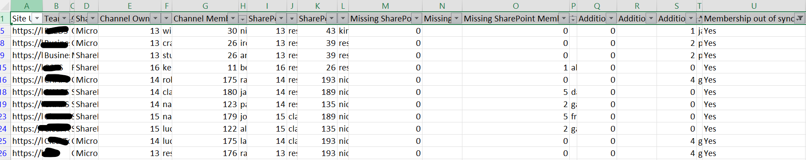

Permission discrepancies between Teams and SharePoint sites
Summary
Permissions for shared channels should be managed from Teams and the channel itself, not by manually changing permissions on the underlying SharePoint site.
That said, the background synchronisation between Teams shared channels and SharePoint can occasionally fail. When that happens, users who are correctly listed as channel owners or members may still be unable to search, open, or work with the content stored in the connected SharePoint site.
This can happen while processing mass permission updates following a migration, e.g. more than 10k permission changes in one go.

Prerequisites
- The script will take a list of sites from a csv file with the following columns: Team, Channel and SiteUrl
$dateTime = Get-Date -Format "dd-MM-yyyy_HHmm"
$invocation = (Get-Variable MyInvocation).Value
$directoryPath = Split-Path $invocation.MyCommand.Path
$logsPath = Join-Path $directoryPath "Logs"
if (-not (Test-Path $logsPath)) {
New-Item -Path $logsPath -ItemType Directory -Force | Out-Null
}
$fileName = "ChannelsSharePointPermissions-$dateTime.csv"
$outputView = Join-Path $logsPath $fileName
$CertPassword = Read-Host "Please enter Certificate Password:" -AsSecureString
# Important: use the plain URL, not the HTML anchor copied from Teams/Outlook.
$TenantUrl = "https://contoso.sharepoint.com"
$TenantName = $TenantUrl.Split('/')[2].Split('.')[0]
$CertPath = "C:\Users\xx\ReshmeeCertPnP.pfx"
$csvSitesPath = Read-Host "Enter path to CSV file"
$clientId = "xxx"
$teamsChannelsCollection = @()
function Get-NormalisedUserIdentity {
[CmdletBinding()]
param(
[Parameter(Mandatory, ValueFromPipeline)]
$User
)
process {
$identity = $null
# Teams channel user properties
if ($User.Email) {
$identity = $User.Email
}
elseif ($User.Mail) {
$identity = $User.Mail
}
elseif ($User.UserPrincipalName) {
$identity = $User.UserPrincipalName
}
# SharePoint or Microsoft 365 group properties
elseif ($User.LoginName) {
$identity = $User.LoginName
}
if ([string]::IsNullOrEmpty($identity)) {
return $null
}
# Convert a SharePoint claims login such as
# i:0#.f|membership|user@domain.com
# into user@domain.com
if ($identity -match '\|') {
$identity = ($identity -split '\|')[-1]
}
$identity.Trim().ToLowerInvariant()
}
}
function Get-UserDisplayValue {
[CmdletBinding()]
param(
[Parameter(Mandatory, ValueFromPipeline)]
$User
)
process {
$identity = Get-NormalisedUserIdentity -User $User
if (-not [string]::IsNullOrEmpty($identity)) {
return $identity
}
if ($User.DisplayName) {
return $User.DisplayName
}
if ($User.Title) {
return $User.Title
}
return "Unknown user"
}
}
$sites = Import-Csv -Path $csvSitesPath |
Where-Object { $_.Exclude -ne "Yes" }
$adminConnection = Connect-PnPOnline -ClientId $clientId -CertificatePath $CertPath -CertificatePassword $CertPassword -Url $TenantUrl -Tenant "$TenantName.onmicrosoft.com" -ValidateConnection -ReturnConnection
foreach ($site in $sites) {
$siteUrl = $site.SiteUrl
Write-Host "Checking Team '$($site.Team)', channel '$($site.Channel)'..." -ForegroundColor Cyan
try {
# Channel membership is the source of truth.
$owners = @(
Get-PnPTeamsChannelUser `
-Team $site.Team `
-Channel $site.Channel `
-Role Owner `
-Connection $adminConnection `
-ErrorAction Stop
)
$members = @(
Get-PnPTeamsChannelUser `
-Team $site.Team `
-Channel $site.Channel `
-Role Member `
-Connection $adminConnection `
-ErrorAction Stop
)
$siteChannel = Get-PnPTenantSite `
-Detailed `
-Identity $siteUrl `
-Connection $adminConnection `
-ErrorAction Stop
$groupId = $siteChannel.GroupId
$siteConnection = Connect-PnPOnline `
-ClientId $clientId `
-CertificatePath $CertPath `
-CertificatePassword $CertPassword `
-Url $siteUrl `
-Tenant "$TenantName.onmicrosoft.com" `
-ValidateConnection `
-ReturnConnection
$ownersGroup = Get-PnPGroup `
-AssociatedOwnerGroup `
-Connection $siteConnection `
-ErrorAction Stop
$membersGroup = Get-PnPGroup `
-AssociatedMemberGroup `
-Connection $siteConnection `
-ErrorAction Stop
# For shared/private channel sites, these SharePoint groups will normally
# be used when the site is not backed by a Microsoft 365 group.
$siteOwners = @(
Get-PnPGroupMember `
-Group $ownersGroup `
-Connection $siteConnection `
-ErrorAction Stop
)
$siteMembers = @(
Get-PnPGroupMember `
-Group $membersGroup `
-Connection $siteConnection `
-ErrorAction Stop
)
$siteMembershipSource = "SharePoint groups"
# Retain support for group-connected sites in the input report.
if (
$null -ne $groupId -and
$groupId -ne [System.Guid]::Empty
) {
$siteOwners = @(
Get-PnPMicrosoft365GroupOwner `
-Identity $groupId `
-Connection $siteConnection `
-ErrorAction Stop
)
$siteMembers = @(
Get-PnPMicrosoft365GroupMember `
-Identity $groupId `
-Connection $siteConnection `
-ErrorAction Stop
)
$siteMembershipSource = "Microsoft 365 group"
}
# Build case-insensitive identity lookup sets.
$siteOwnerIdentitySet = [System.Collections.Generic.HashSet[string]]::new(
[System.StringComparer]::OrdinalIgnoreCase
)
$siteMemberIdentitySet = [System.Collections.Generic.HashSet[string]]::new(
[System.StringComparer]::OrdinalIgnoreCase
)
# Build a combined set of everyone currently present in the channel.
# Owners and members are combined to avoid incorrectly flagging a channel
# owner who also appears in the SharePoint Members group.
$channelIdentitySet = [System.Collections.Generic.HashSet[string]]::new(
[System.StringComparer]::OrdinalIgnoreCase
)
$channelOwnerIdentitySet = [System.Collections.Generic.HashSet[string]]::new(
[System.StringComparer]::OrdinalIgnoreCase
)
$channelMemberIdentitySet = [System.Collections.Generic.HashSet[string]]::new(
[System.StringComparer]::OrdinalIgnoreCase
)
foreach ($channelOwner in $owners) {
$identity = Get-NormalisedUserIdentity -User $channelOwner
if (-not [string]::IsNullOrEmpty($identity)) {
[void]$channelOwnerIdentitySet.Add($identity)
[void]$channelIdentitySet.Add($identity)
}
}
foreach ($channelMember in $members) {
$identity = Get-NormalisedUserIdentity -User $channelMember
if (-not [string]::IsNullOrEmpty($identity)) {
[void]$channelMemberIdentitySet.Add($identity)
[void]$channelIdentitySet.Add($identity)
}
}
foreach ($siteOwner in $siteOwners) {
$identity = Get-NormalisedUserIdentity -User $siteOwner
if (-not [string]::IsNullOrEmpty($identity)) {
[void]$siteOwnerIdentitySet.Add($identity)
}
}
foreach ($siteMember in $siteMembers) {
$identity = Get-NormalisedUserIdentity -User $siteMember
if (-not [string]::IsNullOrEmpty($identity)) {
[void]$siteMemberIdentitySet.Add($identity)
}
}
# Identify users who exist in the channel but are missing from SharePoint.
$missingOwners = @(
foreach ($channelOwner in $owners) {
$identity = Get-NormalisedUserIdentity -User $channelOwner
if (
-not [string]::IsNullOrEmpty($identity) -and
-not $siteOwnerIdentitySet.Contains($identity)
) {
$channelOwner
}
}
)
$missingMembers = @(
foreach ($channelMember in $members) {
$identity = Get-NormalisedUserIdentity -User $channelMember
if (
-not [string]::IsNullOrEmpty($identity) -and
-not $siteMemberIdentitySet.Contains($identity)
) {
$channelMember
}
}
)
# Identify SharePoint owners who no longer exist anywhere in the channel.
$additionalSharePointOwners = @(
foreach ($siteOwner in $siteOwners) {
$identity = Get-NormalisedUserIdentity -User $siteOwner
if (
-not [string]::IsNullOrEmpty($identity) -and
-not $channelIdentitySet.Contains($identity)
) {
$siteOwner
}
}
)
# Identify SharePoint members who no longer exist anywhere in the channel.
$additionalSharePointMembers = @(
foreach ($siteMember in $siteMembers) {
$identity = Get-NormalisedUserIdentity -User $siteMember
if (
-not [string]::IsNullOrEmpty($identity) -and
-not $channelIdentitySet.Contains($identity)
) {
$siteMember
}
}
)
$additionalSharePointOwnerValues = @(
$additionalSharePointOwners |
ForEach-Object {
Get-UserDisplayValue -User $_
}
)
$additionalSharePointMemberValues = @(
$additionalSharePointMembers |
ForEach-Object {
Get-UserDisplayValue -User $_
}
)
$missingOwnerValues = @(
$missingOwners |
ForEach-Object { Get-UserDisplayValue -User $_ }
)
$missingMemberValues = @(
$missingMembers |
ForEach-Object { Get-UserDisplayValue -User $_ }
)
$channelOwnerValues = @(
$owners |
ForEach-Object { Get-UserDisplayValue -User $_ }
)
$channelMemberValues = @(
$members |
ForEach-Object { Get-UserDisplayValue -User $_ }
)
$siteOwnerValues = @(
$siteOwners |
ForEach-Object { Get-UserDisplayValue -User $_ }
)
$siteMemberValues = @(
$siteMembers |
ForEach-Object { Get-UserDisplayValue -User $_ }
)
$outOfSync = if ($missingOwners.Count -gt 0 -or $missingMembers.Count -gt 0 -or $additionalSharePointOwners.Count -gt 0 -or $additionalSharePointMembers.Count -gt 0
) {
"Yes"
}
else {
"No"
}
$numberOutOfSync = $missingOwners.Count + $missingMembers.Count + $additionalSharePointOwners.Count + $additionalSharePointMembers.Count
if ($outOfSync -eq "Yes") {
Write-Warning (
"Membership mismatch found for '$siteUrl'. " +
"Missing SharePoint owners: $($missingOwners.Count); " +
"Missing SharePoint members: $($missingMembers.Count); " +
"Additional SharePoint owners: $($additionalSharePointOwners.Count); " +
"Additional SharePoint members: $($additionalSharePointMembers.Count)"
)
}
$exportView = [PSCustomObject]@{
"Site URL" = $siteUrl
"Teams" = $site.Team
"Channel" = $site.Channel
"SharePoint Membership Source" = $siteMembershipSource
"Channel Owners Count" = $owners.Count
"Channel Owners" = $channelOwnerValues -join ";"
"Channel Members Count" = $members.Count
"Channel Members" = $channelMemberValues -join ";"
"SharePoint Owners Count" = $siteOwners.Count
"SharePoint Owners" = $siteOwnerValues -join ";"
"SharePoint Members Count" = $siteMembers.Count
"SharePoint Members" = $siteMemberValues -join ";"
"Missing SharePoint Owners Count" = $missingOwners.Count
"Missing SharePoint Owners" = $missingOwnerValues -join ";"
"Missing SharePoint Members Count" = $missingMembers.Count
"Missing SharePoint Members" = $missingMemberValues -join ";"
"Additional SharePoint Owners Count" = $additionalSharePointOwners.Count
"Additional SharePoint Owners" = $additionalSharePointOwnerValues -join ";"
"Additional SharePoint Members Count" = $additionalSharePointMembers.Count
"Additional SharePoint Members" = $additionalSharePointMemberValues -join ";"
"Membership out of sync" = $outOfSync
"Membership Count out of sync" = $numberOutOfSync
"Status" = "Success"
"Error" = $null
}
$teamsChannelsCollection += $exportView
}
catch {
Write-Warning "Failed to process '$siteUrl': $($_.Exception.Message)"
$teamsChannelsCollection += [PSCustomObject]@{
"Site URL" = $siteUrl
"Teams" = $site.Team
"Channel" = $site.Channel
"SharePoint Membership Source" = $null
"Channel Owners Count" = $null
"Channel Owners" = $null
"Channel Members Count" = $null
"Channel Members" = $null
"SharePoint Owners Count" = $null
"SharePoint Owners" = $null
"SharePoint Members Count" = $null
"SharePoint Members" = $null
"Missing SharePoint Owners Count" = $null
"Missing SharePoint Owners" = $null
"Missing SharePoint Members Count" = $null
"Missing SharePoint Members" = $null
"Additional SharePoint Owners Count" = $null
"Additional SharePoint Owners" = $null
"Additional SharePoint Members Count" = $null
"Additional SharePoint Members" = $null
"Membership out of sync" = "Unknown"
"Membership Count out of sync" = $null
"Status" = "Failed"
"Error" = $_.Exception.Message
}
}
}
$teamsChannelsCollection |
Sort-Object "Site URL" |
Export-Csv `
-Path $outputView `
-Force `
-NoTypeInformation `
-Encoding UTF8
Write-Host "Report exported to: $outputView" -ForegroundColor Green
Check out the PnP PowerShell to learn more at: https://aka.ms/pnp/powershell
The way you login into PnP PowerShell has changed please read PnP Management Shell EntraID app is deleted : what should I do ?
Source Credit
Sample first appeared on Shared channels permissions synchronisation to SharePoint
Contributors
| Author(s) |
|---|
| Reshmee Auckloo |
Disclaimer
THESE SAMPLES ARE PROVIDED AS IS WITHOUT WARRANTY OF ANY KIND, EITHER EXPRESS OR IMPLIED, INCLUDING ANY IMPLIED WARRANTIES OF FITNESS FOR A PARTICULAR PURPOSE, MERCHANTABILITY, OR NON-INFRINGEMENT.